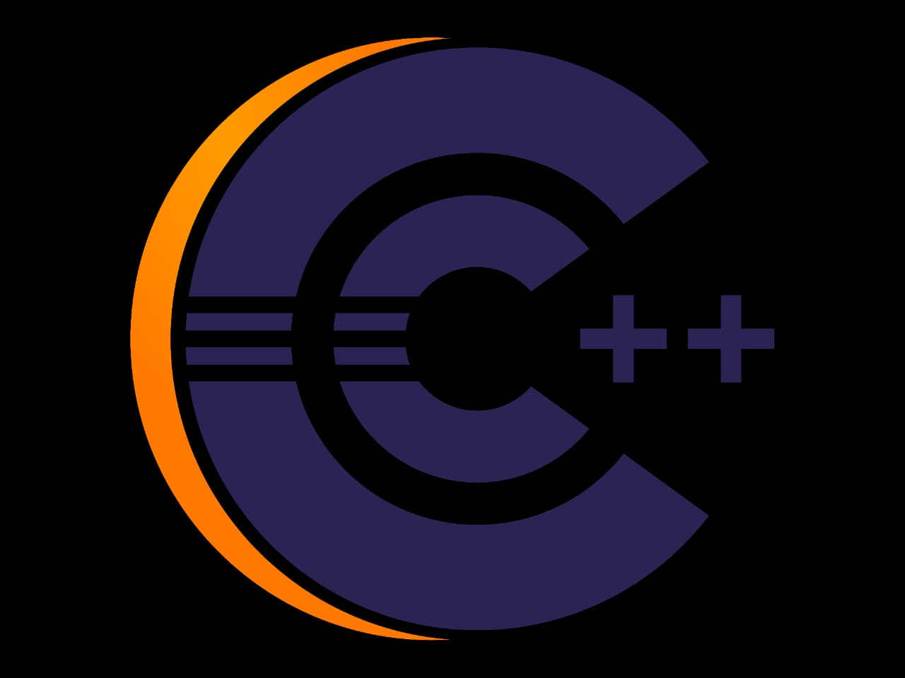

HyperText Markup Language is the computer language that facilitates website creation. The language, which has code words and syntax just like any other language, is relatively easy to comprehend and, as time goes on, increasingly powerful in what it allows someone to create. HTML continues to evolve to meet the demands and requirements of the Internet under the guise of the World Wide Web Consortium, the organization that designs and maintains the language; for instance, with the transition to Web 2.0.
C is a general-purpose computer programming language. It was created in the 1970s by Dennis Ritchie, and remains very widely used and influential. By design, C's features cleanly reflect the capabilities of the targeted CPUs. It has found lasting use in operating systems, device drivers, protocol stacks, though decreasingly for application software, and is common in computer architectures that range from the largest supercomputers to the smallest microcontrollers and embedded systems.
 C++ is a general-purpose programming language created by Danish computer scientist Bjarne Stroustrup as an extension of the C programming language, or "C with Classes". The language has expanded significantly over time, and modern C++ now has object-oriented, generic, and functional features in addition to facilities for low-level memory manipulation. It is almost always implemented as a compiled language, and many vendors provide C++ compilers, including the Free Software Foundation, LLVM, Microsoft, Intel, Oracle, and IBM, so it is available on many platforms.[10]
JavaScript, often abbreviated JS, is a programming language that is one of the core technologies of the World Wide Web, alongside HTML and CSS. Over 97% of websites use JavaScript on the client side for web page behavior, often incorporating third-party libraries. All major web browsers have a dedicated JavaScript engine to execute the code on users' devices.